Master's Thesis Project
Repository: github.com/theFellandes/ADNIKnowledgeGraph
January 2025 — Pre-Meeting Discussion Document
Abstract
This report presents a comprehensive analysis of the current state of the ADNI (Alzheimer's Disease Neuroimaging Initiative) Knowledge Graph project, building upon the knowledge-driven multi-tier architecture established in our IEEE Big Data 2025 paper [1]. The system currently operates as a Labeled Property Graph (LPG) in Neo4j with approximately 407,000 nodes and 1.16 million relationships, integrated with Elasticsearch for fast retrieval and a multi-tier image storage system ensuring lossless preservation. This document examines the exploratory data analysis findings, discusses the architectural distinction between LPGs and true semantic Knowledge Graphs, and critically evaluates the path forward for causality integration. We raise key questions regarding ontology customization for causal reasoning—topics intended for discussion in the upcoming meeting. Importantly, we clarify that the temporal graph component serves patient health trajectory tracking rather than being the primary research focus, and that causality analysis represents the ultimate goal of the thesis research plan.
The Alzheimer's Disease Neuroimaging Initiative (ADNI) represents one of the most comprehensive longitudinal studies in neurodegenerative disease research. As documented in our IEEE Big Data 2025 paper [1], ADNI generates tens of thousands of high-resolution MRI and PET scans together with clinical, biomarker, and genetic data across multiple study phases (ADNI-1, ADNI-GO, ADNI-2, ADNI-3, ADNI-4). This multi-terabyte data accumulation offers tremendous opportunities for understanding complex neurodegenerative disorders but simultaneously creates severe bottlenecks for existing storage and retrieval infrastructures.
Our previous work addressed the fundamental challenge of integrating semantic modeling through knowledge graphs, high-performance indexing, and multi-tier lossless storage into a single coherent architecture. The system demonstrated that medical images can be managed not only as static files but as semantically enriched nodes within a knowledge network, providing both clinical fidelity and research flexibility under a unified framework. This current report builds upon that foundation to address the next phase of the thesis: the transition from a Labeled Property Graph to a true semantic Knowledge Graph with causality support.
The project follows a four-phase research plan:
We are currently at the transition point between Phase 1 and Phase 2. The LPG infrastructure is operational and validated, and we must now address fundamental questions about semantic enhancement and causality integration before proceeding.
A critical distinction in our approach: this project emphasizes patient health-life cycles rather than disease causality per se. The focus is on tracking individual patient trajectories through time, including past visits, medication history, and biomarker evolution. Disease causality (e.g., "Does amyloid deposition cause tau pathology?") remains a downstream research question that depends on first establishing robust temporal patient profiles.
The temporal graph component is designed for patient sickness progress tracking—monitoring how individual patients change over time through their clinical visits. The visit intervals and temporal ordering serve this tracking purpose; they are not the main focal point of the research but rather the infrastructure that enables future causal analysis.
The current implementation builds directly upon the knowledge-driven, multi-tier architecture presented in our IEEE Big Data 2025 paper [1]. This section summarizes the established foundation before discussing the semantic enhancement required for true Knowledge Graph capabilities.
The system consists of three complementary components that work together to provide semantic integration, high-performance retrieval, and lossless image preservation. Figure 1 illustrates the overall system architecture and data flow.

The architecture shows ADNI data sources (DICOM images and CSV tables) flowing through a 16-step ETL pipeline into the multi-tier storage layer consisting of Neo4j (knowledge graph with 407K nodes and 1.16M edges), Elasticsearch (fast metadata retrieval), Redis (query caching), and the file system (lossless DICOM, PNG, TIFF storage). The Streamlit UI and Query API provide user access to the integrated system.
Figure 1: Multi-tier system architecture showing data flow from ADNI sources through the ETL pipeline to storage and retrieval layers.
Neo4j-based Knowledge Graph: A labeled property graph that organizes patients, visits, diagnoses, images, and biomarkers, enriched with ontological annotations. This allows researchers to retrieve complex cross-domain queries such as "all PET scans with a given biomarker along with the subsequent MRI results for the same patient" using a single query.
Elasticsearch-based Indexing: Metadata extracted from DICOM headers and clinical records is indexed to deliver millisecond-level query responses, ensuring high performance in large-scale filtering operations.
Multi-tier File System: Original DICOM images are stored alongside lossless derivatives (16-bit PNG and TIFF files), complemented by JPEG thumbnails for web access. This approach ensures both diagnostic fidelity and user-friendly accessibility.
The 15-step ETL pipeline processes ADNI data through sequential stages. As documented in [1], the pipeline achieves ingestion rates exceeding 500 images per second while maintaining verified lossless conversion through pixel-wise validation. The key pipeline steps are summarized in Table I.
TABLE I: Pipeline Step Summary
| Step | Component | Function |
|---|---|---|
| 1-2 | Database Setup & Load | Initialize connections, ingest CSV tables |
| 3-4 | Patient & Family | Extract patient entities, family relationships |
| 5 | Image Processing | Multi-tier DICOM conversion (PNG, TIFF, thumbnails) |
| 6-7 | Findings & Insertion | Parse clinical findings, batch insert to Neo4j |
| 8-9 | Relationships & Enhancement | Create temporal chains, semantic relationships |
| 10-16 | Analysis | Queries, EDA, biomarker analysis, metrics |
Summary of the 16-step ETL pipeline for ADNI data processing.
The IEEE paper established key performance benchmarks that inform our current development. Query performance was evaluated across five complexity classes, with results summarized in Table II. Simple metadata queries execute in under 10 milliseconds, while complex research queries requiring multiple optional matches take several seconds—a trade-off addressed through caching and index optimization.
TABLE II: Query Performance Summary (from IEEE Big Data 2025)
| Complexity | N | Mean (ms) | Median (ms) | P95 (ms) | DB Hits |
|---|---|---|---|---|---|
| C1 Simple | 15 | 3.1 | 1.3 | 10.3 | 9.5K |
| C2 Moderate | 15 | 6.4 | 2.5 | 23.7 | 4.9K |
| C3 Complex | 10 | 33.6 | 26.1 | 85.9 | 9.9K |
| C4 Research | 10 | 7318.2 | 7210.5 | 14953.5 | 31.6K |
| C5 Analytical | 10 | 51.4 | 50.9 | 106.7 | 62.5K |
Query performance metrics by complexity class. C4 Research queries are slow due to multiple optional matches; Redis caching mitigates this for frequent queries.
Building upon the foundation established in the IEEE paper, this section presents the current state of the knowledge graph through exploratory data analysis. The graph has evolved since the initial publication to include additional relationship types and enhanced node properties.
The current Neo4j graph database contains the statistics summarized in Table III. These metrics reflect the patient-centric design philosophy where each patient serves as a hub node connected to their visits, diagnoses, biomarkers, images, and genetic profiles. Figure 2 presents the entity-relationship structure of the current LPG implementation.

The ER diagram shows the Patient entity at the center with relationships to Visit (HAS_VISIT), Diagnosis (HAS_DIAGNOSIS), Medication (TAKES_MEDICATION), FamilyMember (HAS_FAMILY_MEMBER), GeneticRiskProfile (HAS_GENETIC_RISK), and AdverseEvent (EXPERIENCED_ADVERSE_EVENT). Visits connect to clinical observations including CognitiveAssessment (YIELDED), Biomarker (HAS_BIOMARKER), VolumetricMeasure (HAS_VOLUMETRIC), PETBinding (HAS_PET), and VitalSigns (RECORDED_VITALS). The temporal chain is represented by Visit-to-Visit FOLLOWED_BY relationships. Disease progression is captured through Diagnosis PROGRESSED_TO Diagnosis edges.
Figure 2: Entity-Relationship diagram of the current Labeled Property Graph implementation in Neo4j, showing the patient-centric design with all node types and relationship patterns.
TABLE III: Current Database Statistics
| Entity | Count | Description |
|---|---|---|
| Patients | 2,638 | Unique ADNI participants across all phases |
| Visits | 30,267 | Clinical visits with temporal ordering |
| Diagnoses | 25,946 | Diagnostic assessments (CN, MCI, AD, etc.) |
| Total Nodes | ~407,000 | All entity types including images, biomarkers |
| Total Relationships | ~1,160,000 | Edges connecting entities |
Database statistics from the current Neo4j implementation.
The graph contains diverse node types representing different aspects of patient data. Image nodes dominate the count due to the multi-modal imaging nature of ADNI (MRI and PET scans at each visit). The distribution reflects the comprehensive nature of the dataset, with nodes representing clinical assessments, biomarker measurements, genetic profiles, and family history information.
Analysis reveals that each patient has an average of approximately 11.5 visits over the study duration, with each visit potentially generating multiple imaging studies, cognitive assessments, and biomarker measurements. This creates a rich, interconnected structure suitable for longitudinal trajectory analysis.
The relationship structure reflects the patient-centric design. Figure 3 illustrates a detailed view of a single patient node with all connected entities and their properties, demonstrating the richness of the data model.

This diagram shows a complete patient record including: Demographics (gender, age, education), Genetics (APOE genotype, family history), Visit Timeline (baseline through month 24 with NEXT_VISIT chains), Cognitive Tests (MMSE, CDR, ADAS-Cog, MoCA, NPI, GDS, FAQ), Vitals, CSF and Blood Biomarkers, Neuroimaging (MRI volumetrics, Amyloid PET, Tau PET, FDG-PET), Medications, Adverse Events, Diagnoses with progression tracking, and the derived ATN Profile. Each entity shows its actual properties as stored in Neo4j.
Figure 3: Detailed schema of a single patient node showing all connected entities, their properties, and relationships. This illustrates the comprehensive data capture for each ADNI participant.
Key relationship types include:
The ADNI cohort spans the full Alzheimer's disease continuum, enabling analysis across all disease stages. Table IV shows the distribution of patients by their most recent diagnosis, demonstrating balanced representation across the clinical spectrum.
TABLE IV: Patient Distribution by Disease Stage
| Stage | Description | Approx. Count | Percentage |
|---|---|---|---|
| CN | Cognitively Normal | 650 | 24.6% |
| SMC | Subjective Memory Concern | 150 | 5.7% |
| EMCI | Early Mild Cognitive Impairment | 520 | 19.7% |
| LMCI | Late Mild Cognitive Impairment | 680 | 25.8% |
| AD | Alzheimer's Disease Dementia | 638 | 24.2% |
Distribution of patients across disease stages at most recent visit.
Analysis of patient node connectivity reveals the richness of the graph structure. The average patient node has connections to 11-12 visit nodes, each visit connecting to multiple clinical observations. High-connectivity patients (those with longer study participation) may have over 100 direct and indirect relationships, demonstrating the value of the graph model for capturing longitudinal complexity.
Super-connector analysis identifies patients with the most comprehensive data profiles—these individuals often have complete multi-modal data (MRI, PET, CSF, genetics) across many visits and represent ideal candidates for detailed trajectory analysis.
A fundamental issue must be addressed before proceeding with causality integration: the current Neo4j implementation is a Labeled Property Graph (LPG), not a true semantic Knowledge Graph. This distinction has significant implications for reasoning capabilities and is often misunderstood in the literature.
Many systems incorrectly claim to be Knowledge Graphs when they are actually LPGs. The key differentiator is semantic grounding—whether relationships carry formal, machine-interpretable meaning that enables reasoning and inference. Figure 4 illustrates this fundamental distinction.

The diagram contrasts two representations of the same patient-diagnosis relationship. In the LPG (current state), the relationship is simply a string label "HAS_DIAGNOSIS" connecting Patient to Diagnosis nodes. In the KG (target state), both entities have ontology type references (Patient: ncit:C16960, Diagnosis: MONDO:0004975, snomed:26929004) and the relationship uses a formal semantic predicate (obo:RO_0002558 "has_disease_course") from the Relation Ontology. The arrow between them represents the semantic enhancement transformation required.
Figure 4: Side-by-side comparison of LPG and Knowledge Graph representations. The LPG uses string labels while the KG uses ontology-grounded URIs that enable reasoning.
TABLE V: LPG vs. Knowledge Graph Characteristics
| Aspect | LPG (Current State) | True KG (Target State) |
|---|---|---|
| Schema | Implicit, application-defined | Formal OWL/RDF ontology |
| Relationships | Typed strings (syntactic) | Ontology-grounded (semantic) |
| Inference | Not supported | Reasoning capabilities |
| Interoperability | System-specific | Standard ontologies (SNOMED, LOINC) |
| Query Language | Cypher only | SPARQL + Cypher |
Comparison of Labeled Property Graph and Knowledge Graph characteristics.
In the current implementation, a relationship like HAS_DIAGNOSIS is simply a string label connecting two nodes. It does not carry formal semantic content that a reasoner could interpret. For example, the system cannot automatically infer that a patient with diagnosis "AD" has a more severe condition than one with "MCI" without explicit programming of this logic.
Similarly, biomarker values are stored as properties without semantic links to what they measure. The system knows that a patient has an "ABETA42" value of 850, but it does not know that this measures amyloid-beta 42 peptide in cerebrospinal fluid, that values below 880 pg/mL are typically considered abnormal, or that this relates to amyloid plaque pathology in the brain.
The transformation from LPG to true KG requires adding ontology references and semantic relationship grounding. Figure 5 presents the target semantic architecture with full ontology integration, and Table VI outlines the planned ontology mappings.

This comprehensive diagram shows the target KG architecture organized into layers: (1) Ontology Layer containing external references (SNOMED-CT, HPO, LOINC, UBERON, Gene Ontology, RxNorm, ADO, MONDO); (2) Patient Semantic Entity typed with foaf:Person; (3) Temporal Layer using OWL-Time with time:Interval and time:Instant; (4) Observations grounded in OBOE/LOINC (CSF, MRI, PET observations); (5) Findings mapped to HPO (biomarker, cognitive, imaging findings); (6) Pathological States representing disease mechanisms (AmyloidPathology, TauPathology, Neurodegeneration) with causal relationships (ro:RO_0002411 "causally upstream of"); (7) Disease entities from ICD/MONDO with conversion events; (8) Treatments linked to RxNorm. Dashed lines show ontology mappings while solid lines show semantic relationships using Relation Ontology predicates.
Figure 5: Target semantic Knowledge Graph architecture showing ontology layer integration, semantic relationship predicates from RO, and the causal cascade representation (A→T→N).
TABLE VI: Planned Ontology Mappings
| Entity Type | Target Ontology | Example Mapping |
|---|---|---|
| Diagnosis | SNOMED-CT | AD → SNOMED:26929004 |
| Biomarker | LOINC | Aβ42 → LOINC:72333-6 |
| Brain Region | UBERON | Hippocampus → UBERON:0002421 |
| Symptom | HPO | Memory loss → HP:0002354 |
| Relationship | RO (Relation Ontology) | HAS_DIAGNOSIS → RO:0000091 |
Ontology mapping strategy for semantic enhancement.
Figure 6 shows the domain-organized view of the enhanced Knowledge Graph, highlighting how different data domains (Clinical, Biomarker, Imaging, Genetic) connect through the patient-centric model with semantic relationships.

The diagram organizes the KG into domain subgraphs: Patient-Centric Core (Patient typed with ncit:C16960); Temporal Layer (Visits as time:Instant with time:before relationships and delta_months properties); Clinical Domain (Diagnoses with SNOMED codes, CognitiveAssessment with ncit references, CognitiveFinding with HPO); Biomarker Domain (CSFBiomarker with LOINC, AmyloidPathology/TauPathology/Neurodegeneration with SNOMED, ATNProfile with custom adni: ontology); Imaging Domain (MRI, AmyloidPET, TauPET with DICOM/SNOMED, BrainRegion with UBERON); Genetic Domain (APOEGenotype, GeneticRiskFactor); Disease Ontology Layer (AlzheimersDisease DOID, MCI DOID, ConversionEvent); External Knowledge Bases (AlzKB, Gene Ontology, DrugBank). All relationships use RO predicates (ro:RO_0000056 participates_in, ro:RO_0002234 has_output, ro:RO_0002411 causally_upstream).
Figure 6: Domain-organized Knowledge Graph showing semantic relationships between Patient, Clinical, Biomarker, Imaging, and Genetic domains with Relation Ontology predicates.
True causal reasoning requires semantic grounding. Without formal ontologies, we cannot distinguish between correlation and causation at the data model level. For example:
Ontologies provide the semantic framework needed to model causal mechanisms, not just statistical associations. This is critical for the thesis goal of causality analysis.
The temporal graph component requires clarification regarding its purpose within the overall research plan. There has been some ambiguity about whether temporal analysis is a primary research focus; this section clarifies its role.
The temporal graph exists to track patient sickness progression—following individual patients through their clinical journey over time. The FOLLOWED_BY relationship chains establish temporal ordering between visits, while delta_months properties capture the intervals between observations. Figure 7 illustrates a typical patient trajectory showing disease progression over time.

The diagram follows patient 011_S_0001 through five timepoints: Baseline (CN, MMSE:29, Aβ42:950), Month 12 (CN, MMSE:28, Aβ42:820), Month 24 (MCI, MMSE:26, Aβ42:750), Month 36 (MCI, MMSE:24, Aβ42:680), and Month 48 (AD, MMSE:21, Aβ42:620). FOLLOWED_BY edges connect consecutive visits with Δ=12mo intervals. Two ConversionEvents are highlighted: CN→MCI at Month 24 and MCI→AD at Month 48. Color coding indicates disease stage: green (CN), orange (MCI), red (AD). The diagram demonstrates how cognitive scores decline and biomarker abnormality increases along the trajectory.
Figure 7: Example patient trajectory showing disease progression from Cognitively Normal (CN) through MCI to AD over 48 months, with biomarker and cognitive score changes at each visit.
This infrastructure enables queries such as:
months_from_baseline provides consistent timelineIt is important to distinguish what the temporal infrastructure does not provide, as these represent the gap to be addressed in future phases:
The temporal ordering is necessary but not sufficient for causal analysis. Temporal precedence (A occurs before B) does not establish causation (A causes B). The transition from temporal description to causal explanation is a core challenge for the thesis.
We have not yet explored the causality part of the thesis research plan. This section documents the current state and raises questions for discussion before proceeding.
The system currently supports:
The ATN (Amyloid-Tau-Neurodegeneration) framework provides a biological staging system that could inform causal modeling. Figure 8 illustrates how biomarker inputs are processed to generate ATN classifications.

The flowchart shows biomarker inputs (CSF Analysis for Aβ42/Tau/pTau, Amyloid PET for Centiloids, Tau PET for SUVR, MRI Volumetrics for hippocampus) feeding into a decision tree. The Amyloid check determines A+/A- status; if positive, the Tau check determines T+/T-; then the Neurodegeneration check determines N+/N-. Four outcome profiles are shown: A-T-N- (Normal, green), A+T-N- (Preclinical AD, yellow), A+T+N- (Early AD, orange), A+T+N+ (AD Dementia, red). This classification scheme, based on the NIA-AA Research Framework, enables biological staging independent of clinical diagnosis.
Figure 8: ATN classification decision flow showing how CSF biomarkers, PET imaging, and MRI volumetrics combine to determine amyloid (A), tau (T), and neurodegeneration (N) status.
The thesis plan includes evaluation of several causal discovery approaches, each with different assumptions and capabilities. Table VII summarizes the planned algorithms.
TABLE VII: Planned Causal Discovery Algorithms
| Algorithm | Type | Strengths | Limitations |
|---|---|---|---|
| PC Algorithm | Constraint-based | Well-established, interpretable | Assumes causal sufficiency |
| FCI Algorithm | Constraint-based | Handles latent confounders | Computationally expensive |
| GES | Score-based | Good with sparse graphs | Score function sensitivity |
| DAG-GNN | Neural network | Scalable, nonlinear | Less interpretable |
| DoWhy | Inference framework | Refutation tests, robust | Requires prior DAG |
Summary of causal discovery algorithms planned for Phase 4.
Figure 9 presents the planned causal discovery pipeline, showing how data flows from the Knowledge Graph through multiple discovery algorithms to integration and inference.

The pipeline consists of four stages: (1) Data Preparation—extracting variables (biomarkers, cognition) from the Knowledge Graph and preprocessing (missing data handling, normalization); (2) Causal Discovery—running multiple algorithms in parallel: PC Algorithm (constraint-based), FCI Algorithm (handles latent variables), GES Algorithm (score-based), and DAG-GNN (neural network approach); (3) Integration—comparing results across algorithms, validating against literature, and embedding discovered causal edges into the KG; (4) Causal Inference—using the DoWhy framework for effect estimation and refutation tests. This multi-algorithm approach allows comparison of discovered structures and increases confidence in robust causal relationships.
Figure 9: Planned causal discovery pipeline showing data preparation, parallel algorithm execution (PC, FCI, GES, DAG-GNN), integration with literature validation, and DoWhy-based causal inference.
A fundamental question emerges: Should we customize ontologies specifically to support causal reasoning? This question has no obvious answer and requires discussion before implementation proceeds.
Three approaches are possible:
Each option involves trade-offs between simplicity, expressivity, and standards compliance that should be discussed before implementation.
The following questions are raised for discussion in the upcoming meeting. These represent critical decision points that will shape the next phase of the thesis.
Q1: Ontology Customization for Causality
Should we customize ontologies specifically to reveal and support causal reasoning? The options range from using standard ontologies as-is (simpler but potentially limiting) to creating custom causal extensions (more complex but more expressive). What approach best serves the thesis objectives?
Q2: Approach to Causality
How should we approach the causality component? Options include: (a) Focus on causal discovery from observational data (PC, FCI, GES); (b) Focus on causal inference given an assumed DAG (DoWhy); (c) Combine discovery and inference in a two-stage pipeline; (d) Use knowledge graph structure to guide causal hypothesis generation. Each has different data requirements and scientific contributions.
Q3: Knowledge Graph vs. Causal Graph Relationship
What is the relationship between the semantic KG and causal DAG? Should the causal DAG be embedded within the KG as special edge types? Should it be a separate structure derived from KG data? How do ontological relationships (IS_A, PART_OF) relate to causal relationships?
Q4: Temporal vs. Causal Precedence
How should temporal ordering inform causal inference? Temporal precedence is necessary but not sufficient for causation. Should FOLLOWED_BY edges constrain causal graph learning? How do we handle biomarker changes that precede clinical symptoms by years?
Q5: ATN Framework Integration
Should the ATN (Amyloid-Tau-Neurodegeneration) classification drive causal modeling? The ATN provides a biological framework for AD staging, and the A→T→N cascade is a hypothesized causal chain. Should we test/validate this cascade using causal discovery methods, or use it as prior knowledge to constrain discovery?
Q6: External Knowledge Base Integration
Should we integrate external knowledge bases (e.g., AlzKB with 118,902 entities) before or after causal analysis? Integration could provide prior knowledge for causal discovery, but risks biasing discovery toward known relationships rather than novel findings.
This report has presented the current state of the ADNI Knowledge Graph project, building upon the foundation established in our IEEE Big Data 2025 paper [1]. The main findings can be summarized as follows:
The questions raised in Section VII are intended to guide discussion in the upcoming meeting, ensuring alignment between the technical implementation and thesis objectives. The causality analysis represents the ultimate goal of the research plan, and decisions made now will shape the path toward that goal.
The ADNI dataset (headers.json) contains 180+ tables with 5,800+ unique columns covering clinical, imaging, biomarker, and genetic domains. Key table categories include:
TABLE A-I: ADNI Data Schema Categories
| Category | Example Tables | Key Fields |
|---|---|---|
| Clinical | DXSUM, ADAS, CDR, MMSE | DIAGNOSIS, TOTSCORE, CDRSUM |
| Biomarker | UPENNBIOMK, CSF_BIOMARKERS | ABETA42, TAU, PTAU |
| Imaging | All_Images, AMYMETA, TAUMETA | image_id, modality, SCANDATE |
| Genetics | APOERES, GENETICS | APOE genotype, SNP data |
| Demographics | PTDEMOG, VITALS | AGE, EDUCATION, GENDER |
Summary of ADNI data categories available for knowledge graph construction.
— End of Document —
Version 1.1 | January 2025 | Pre-Meeting Discussion Document
Diagram Index: